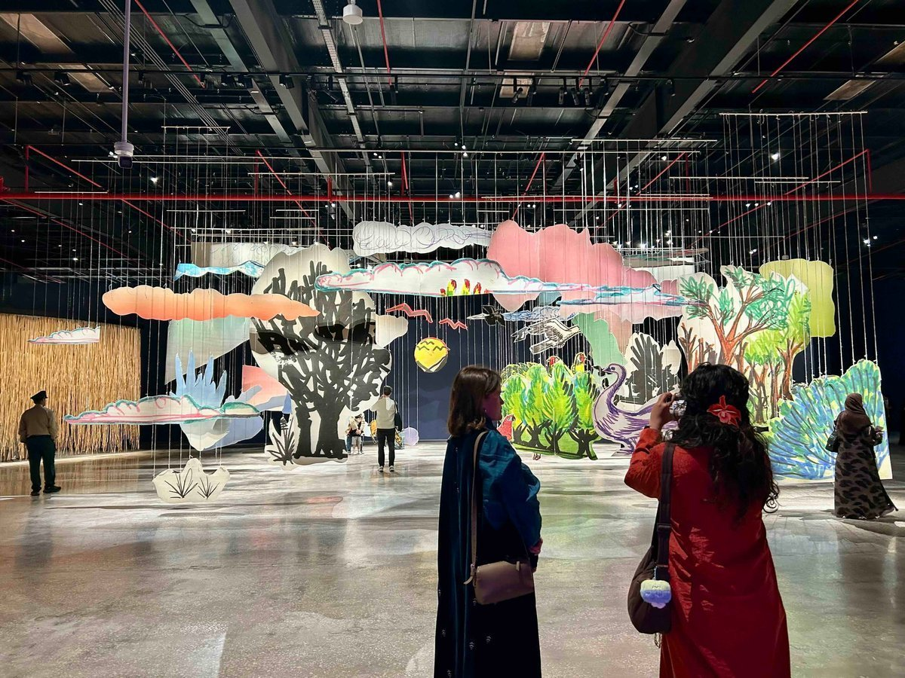
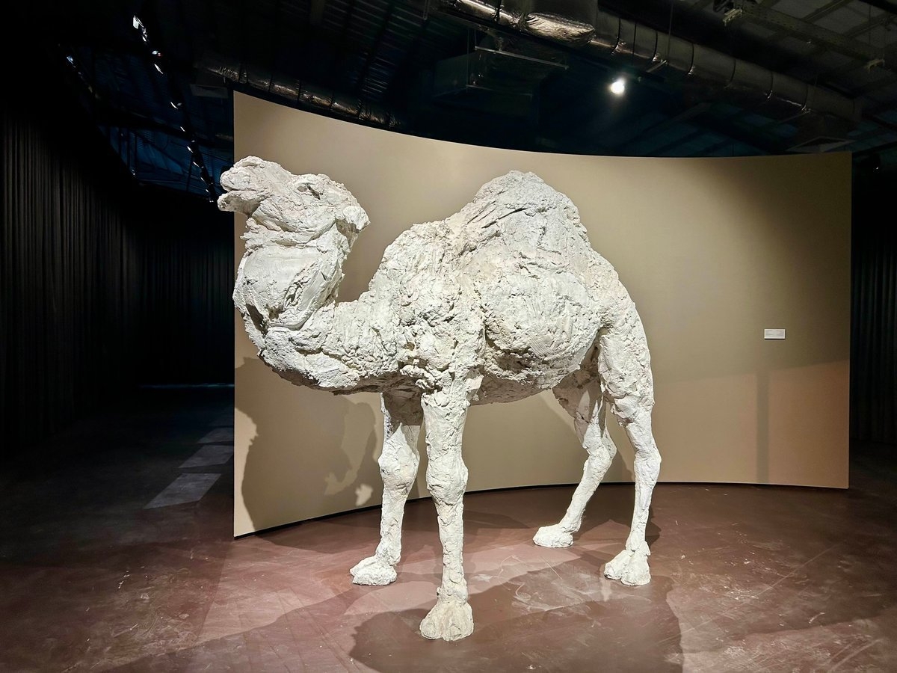
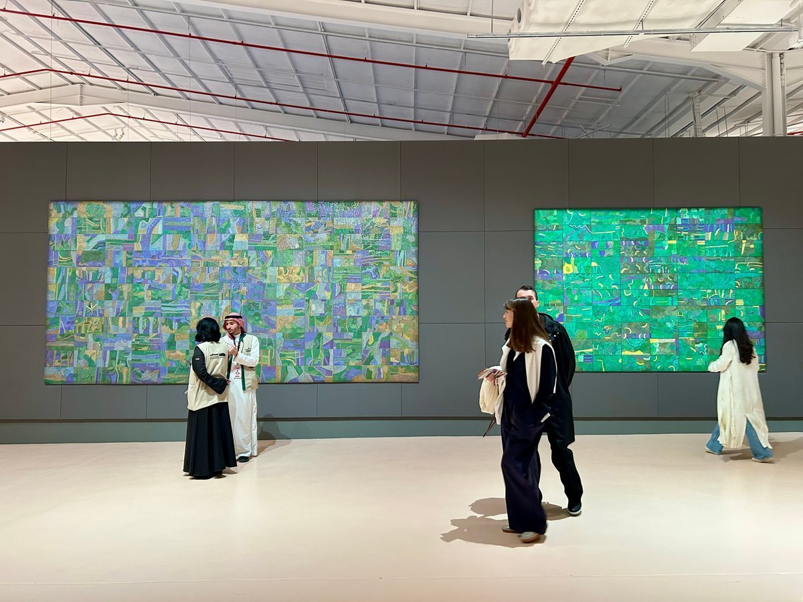
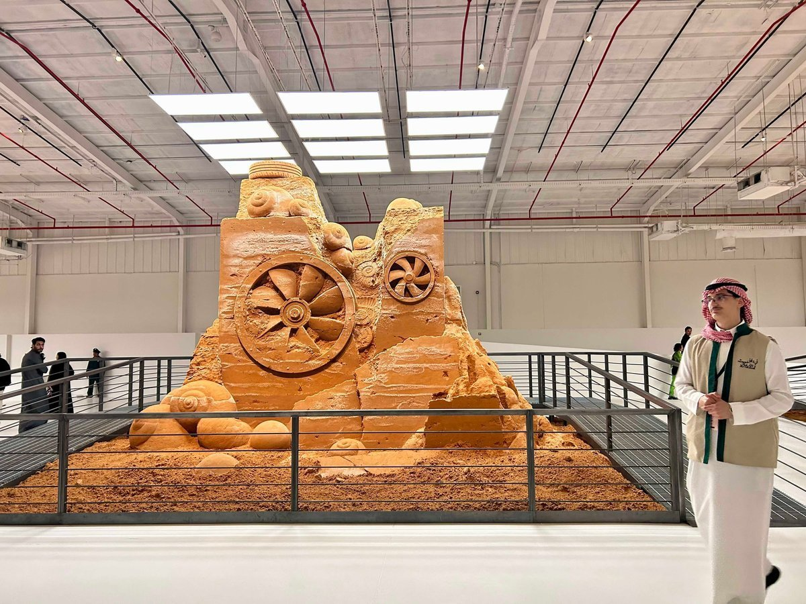
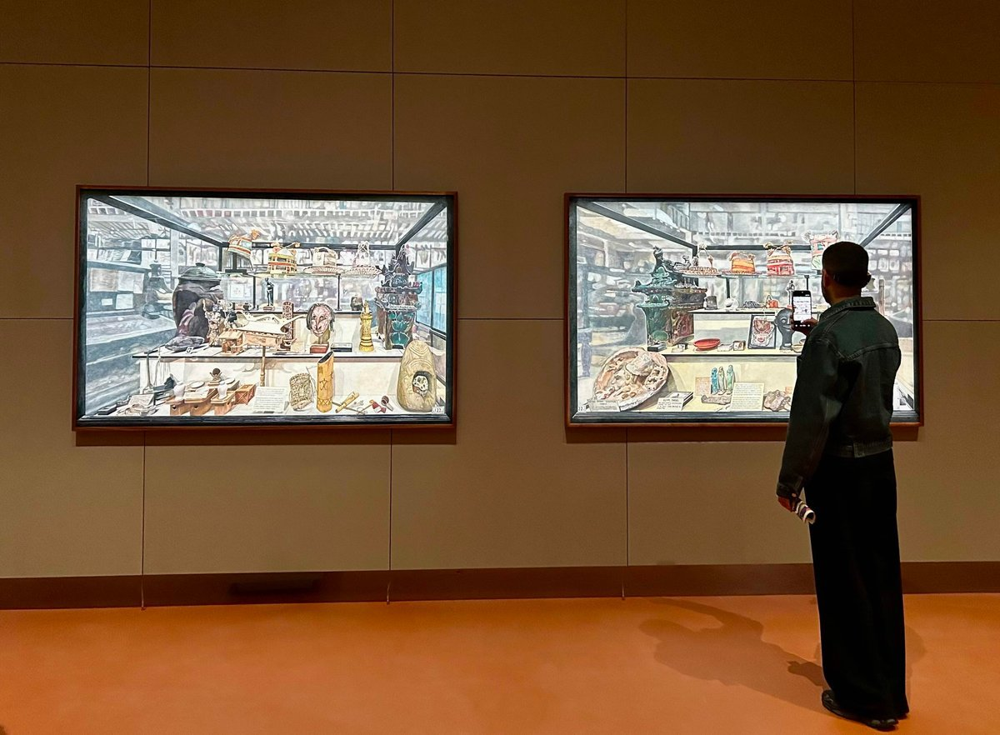
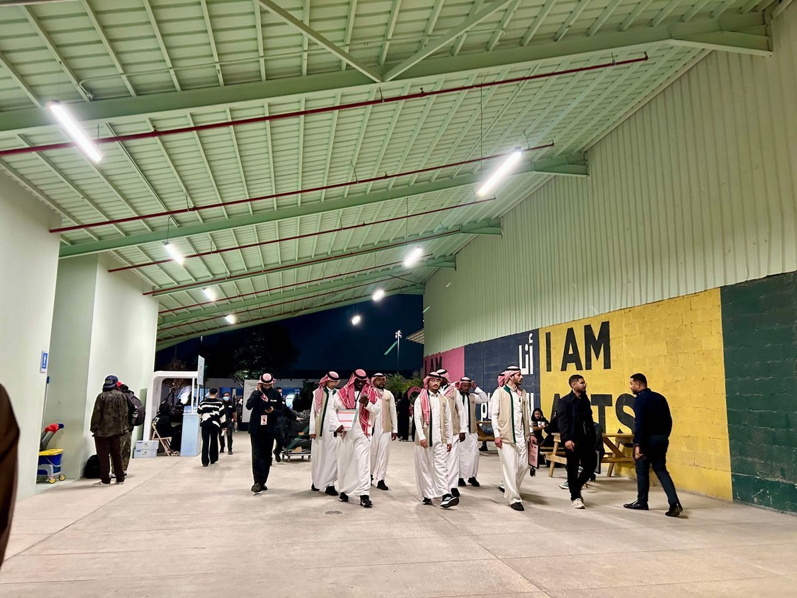
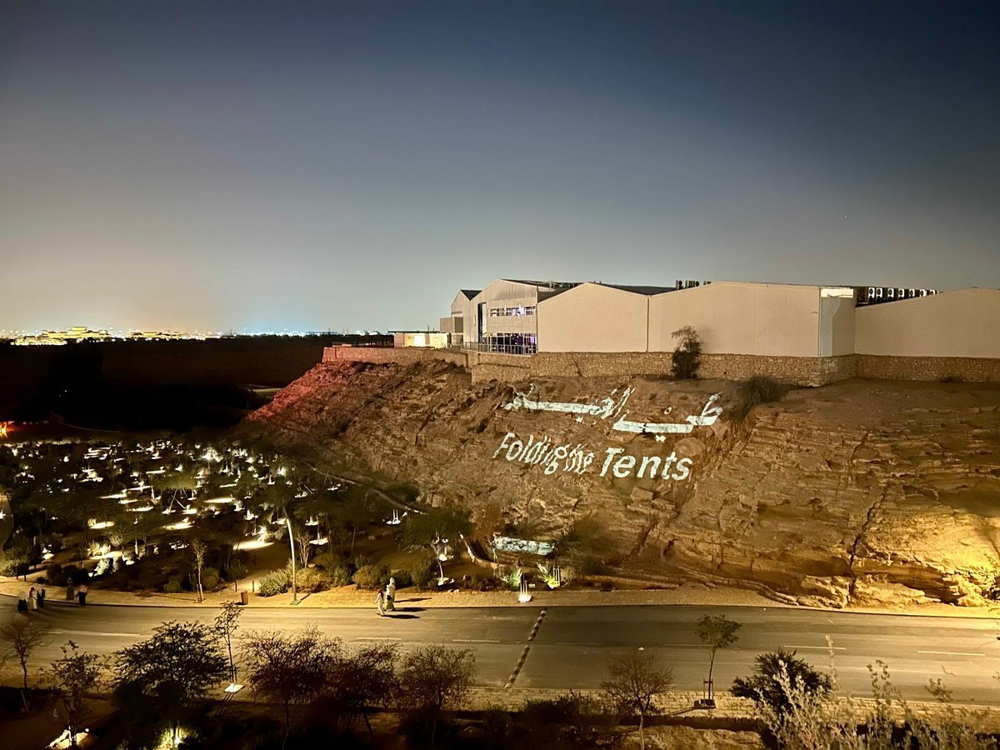
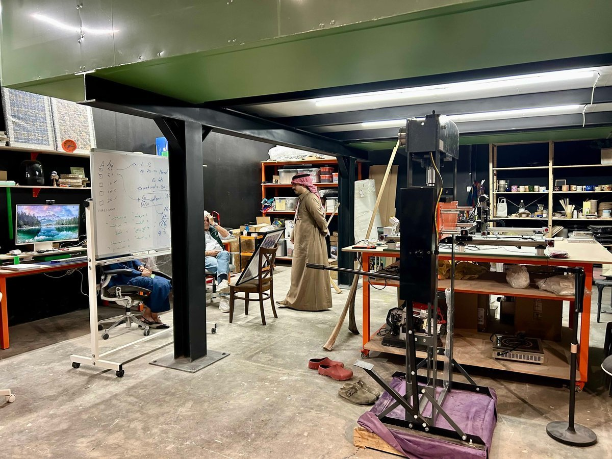
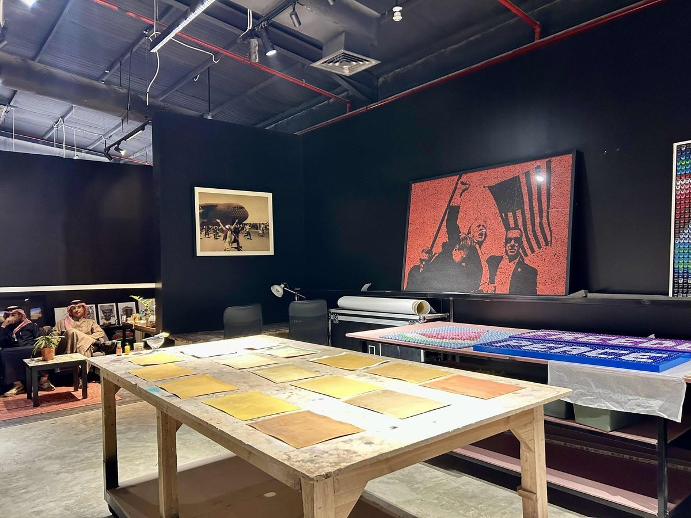
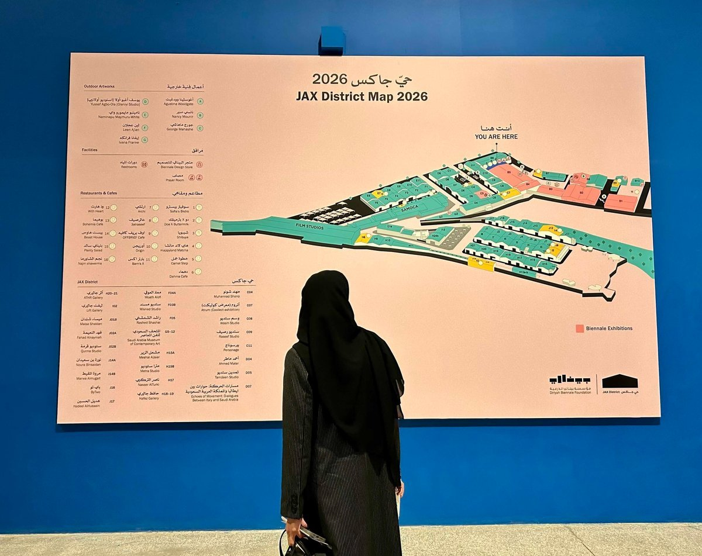

'디리야 현대미술 비엔날레(Diriyah Contemporary Art Biennale)' 2026은 1월 30일부터 5월 2일까지 리야드 인근 디리야의 작스 디스트릭트(JAX District)에서 열리고 있다. 디리야 비엔날레 재단은 리야드와 제다에서 각각 다른 성격의 비엔날레를 운영 중이다. 리야드에서는 현대미술 중심의 전시가 열리는 반면, 제다에서는 이슬람 미술을 다루는 비엔날레가 진행된다. 통신원은 이번 리야드 디리야에서 열리는 현대미술 비엔날레의 현장을 직접 방문해 전시를 관람했다. 이번 비엔날레의 주제는 '막간과 이동 사이에서(In Interludes and Transitions / في الِح ّل والترحال)'로, 아라비아반도의 유목 문화에서 사용되던 구어적 표현에서 가져왔다.

▲ '디리야 현대미술 비엔날레' 2026 전경 — 출처: 통신원 촬영
전시는 머무름과 이동, 정착과 여정을 반복해온 지역의 역사에서 출발해, 오늘날까지 이어지는 이주와 변화의 경험을 중심 맥락으로 삼는다. 인간의 이동뿐만 아니라 바람과 무역, 이주와 망명, 기술과 정보의 흐름까지 함께 탐구하며, 이러한 움직임은 노래와 이야기, 소리, 영상, 퍼포먼스 등 다양한 형식의 작품으로 선보인다. 전시 공간 연출은 디자인 스튜디오 포마판타스마(Formafantasma)가 맡았다. 전시는 하나의 고정된 동선을 따르지 않고 여러 장면이 이어지는 구조로 설계되어, 관람객이 공간을 이동하며 작품 사이의 흐름을 체험할 수 있도록 구성됐다. 예술감독은 노라 라지안(Nora Razian)과 사비 아하메드(Sabih Ahmed)가 맡았으며, 다수의 국제 큐레이터가 참여해 전시를 기획했다.
이번 비엔날레에는 전 세계 70여 명의 작가가 참여하며, 시각예술뿐 아니라 음악, 영화, 건축, 글쓰기 등 다양한 분야의 작품이 함께 소개된다. 이 가운데 20점 이상의 작품은 이번 전시를 위해 새롭게 제작된 신작이다. 소리와 퍼포먼스, 설치, 연구 기반 작업이 어우러지며, 개인의 기억과 집단의 역사, 지역의 경험이 어떻게 이어지고 변형되는지를 살펴볼 수 있다. 특히 이번 비엔날레에는 콜롬비아·한국계 미국인 작가 갈라 포라스-킴(Gala Porras-Kim)도 참여했다. 그동안 작가는 언어와 역사, 제도 비판을 주제로 작업을 이어왔으며, 이번 전시에서는 이동과 기록이라는 주제를 다른 각도에서 조명한다.



▲ '디리야 현대미술 비엔날레'에 출품된 작품들 — 출처: 통신원 촬영

▲ '디리야 현대미술 비엔날레'에 출품된 갈라 포라스-킴(Gala Porras-Kim)의 작품 — 출처: 통신원 촬영
작스 디스트릭트(JAX District), 산업 지구에서 예술 지구로 탈바꿈
작스 디스트릭트는 과거 물류와 산업 시설이 집중된 지역이었다. 현재는 전시장과 작업 공간, 공연 및 프로그램 공간이 함께 운영되는 예술 지구로 조성되어, 리야드에서 열리는 주요 미술 행사의 중심지로 자리 잡았다. 이 지역의 특징은 기존 산업 시설의 건축 구조를 유지한 채 전시 공간으로 전환했다는 점이다. 창고의 골조와 재료가 그대로 남아 있어, 공간은 완성된 미술관이라기보다 작업 현장에 가까운 인상을 준다. 이러한 구조는 대형 설치 작품이나 영상, 사운드 작업을 수용하는 데 적합하다.


▲ 디리야 현대미술 비엔날레가 열리고 있는 작스 디스트릭트 전경 — 출처: 통신원 촬영
또한, 작스 디스트릭트는 특정 전시 기간에만 활용되는 임시 공간이 아니라 연중 다양한 전시와 프로그램이 이어지는 장소로 운영된다. '디리야 현대미술 비엔날레' 기간에는 일부 작가들의 작업 공간을 관객이 직접 볼 수 있는 오픈 스튜디오 프로그램도 마련되어 있다.


▲ 작스 디스트릭트(JAX District) 오픈 스튜디오 전경 — 출처: 통신원 촬영
작스 디스트릭트에는 사우디아라비아 최초의 현대미술관인 사모카(SAMOCA)를 비롯해 다수의 갤러리와 창작 스튜디오, 문화 관련 기관이 입주해 있다. 이들은 지역 예술 생태계를 구성하는 기반으로 기능하며, 리야드 문화 인프라의 한 축을 형성하고 있다. 또한 '디리야 현대미술 비엔날레'를 비롯해 음악·미디어·패션 분야의 대형 문화 행사가 이곳에서 개최되고 있다. 이러한 행사들은 작스 디스트릭트를 국제적 문화 교류의 장으로 확장시키며, 리야드 문화 지형 내에서의 위상을 더욱 공고히 하고 있다.

▲ 작스 디스트릭트 지도 전경 — 출처: 통신원 촬영
사진출처 및 참고자료
통신원 촬영
디리야 비엔날레 파운데이션(Diriyah Biennale Foundation) 웹사이트, biennale.org.sa
작스 디스트릭트(Jax District) 웹사이트, jaxdistrict.com